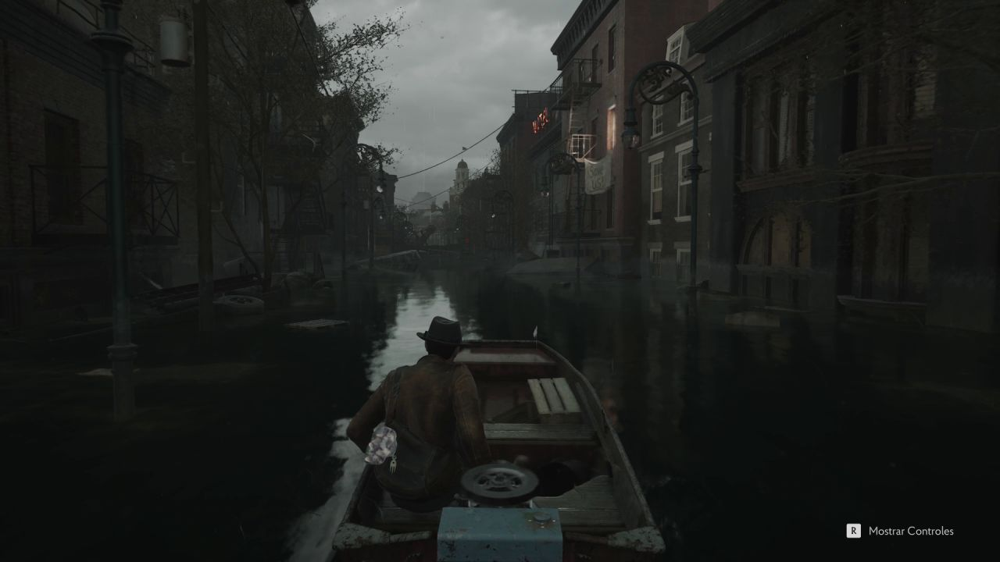
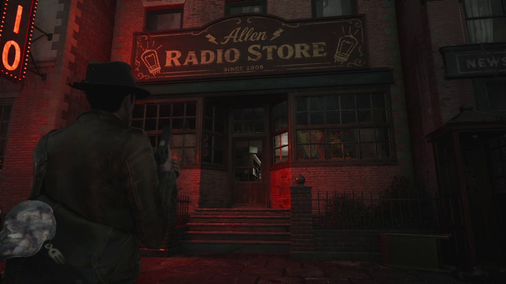
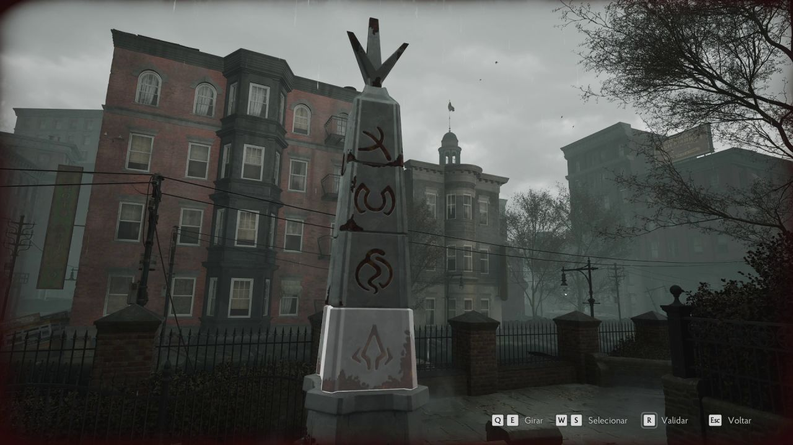
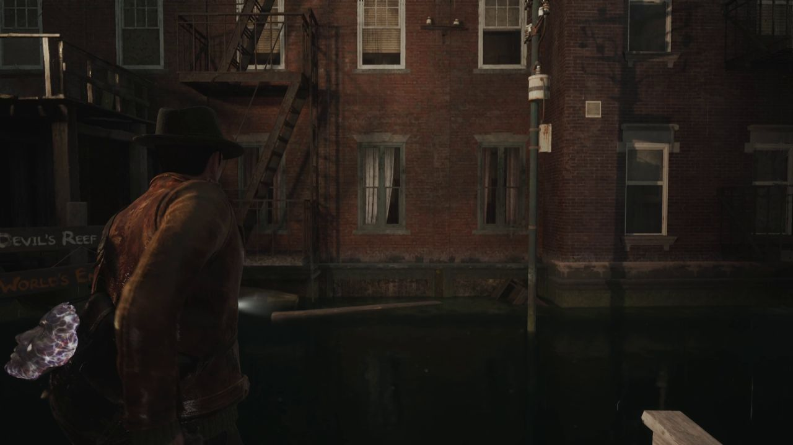
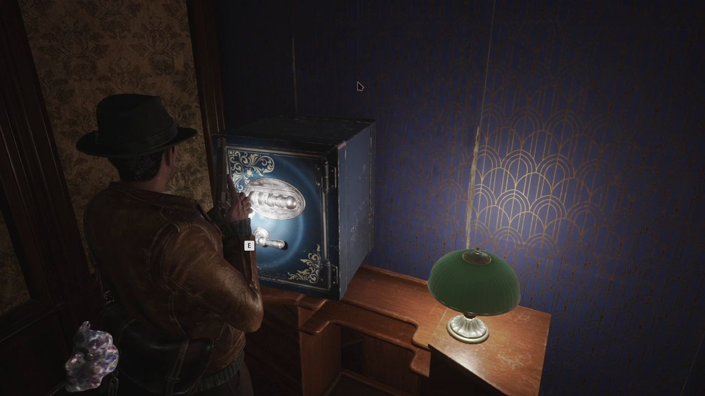
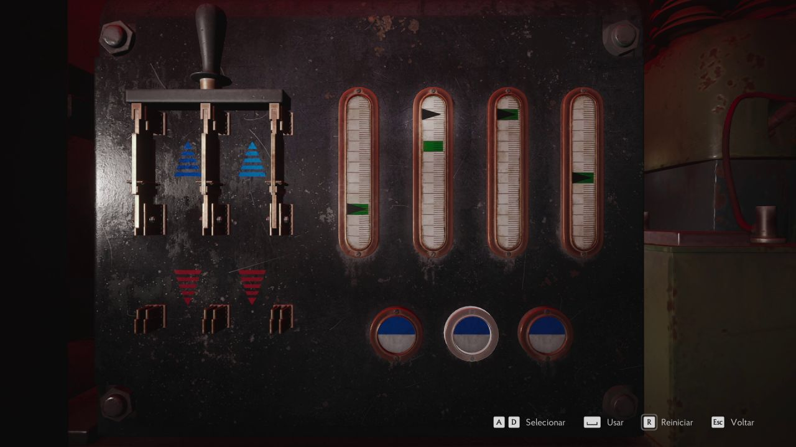
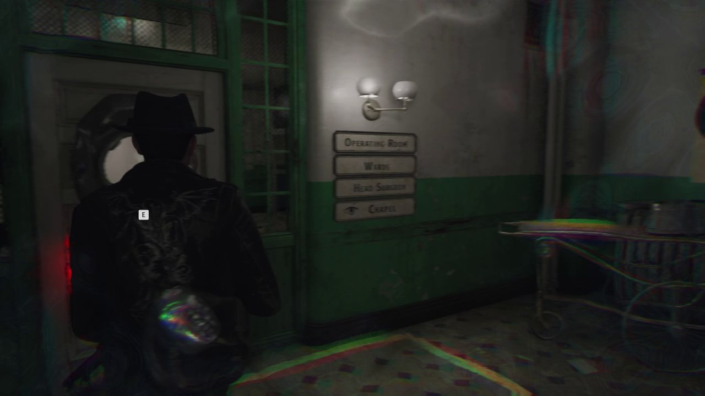
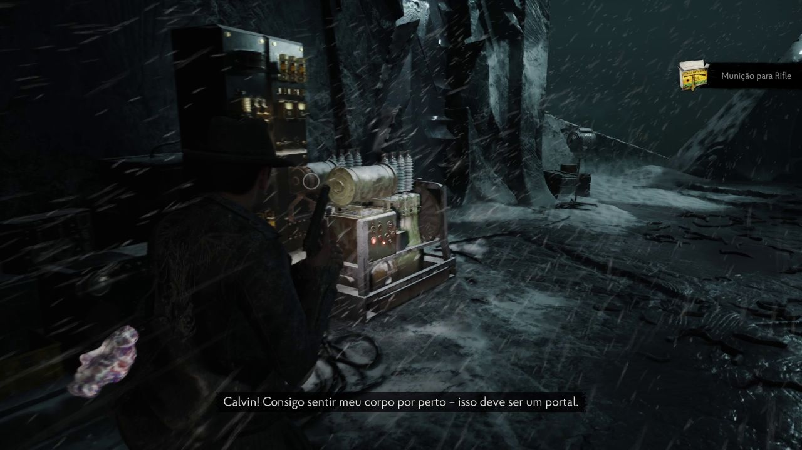

Spoiler warning. This walkthrough follows the full campaign of The Sinking City 2: safe and floodgate codes, the puzzles that block your way, boss tips and the ending. Location and item names follow the game's English version where we could confirm them; our gameplay videos are in Brazilian Portuguese, so on-screen text in the screenshots is in Portuguese. All images come from Bora de Play's gameplay.
How to use this walkthrough
First playthrough. Follow the chapters in order. Safe rooms have a storage chest, a workbench and a perk table; return to them before every new area. Store whatever you won't use soon, because the inventory fills up quickly. Whenever you find an E.R.C. Activator Pen, look for the nearest E.R.C. crate: they hold weapon and inventory upgrades.
Already playing? Find the spot where you are stuck in the table.
| Where I am stuck | Code or solution | Go to |
|---|---|---|
| Apartment safe | 1908 | A New Day |
| Floodgate fuse panel | I on the left, T on top, L on the right | The floodgate panel |
| Church floodgate | 1672 | Church of Redemption |
| Obelisk and trident | Symbols in the order given by the note | The obelisk |
| Whale blocking the way to the hotel | Crane with fuel and a gear | Crane and whale |
| Hotel room safe | 2137 | Devil's Reef Hotel |
| Ventilation panel | 1 (2×), 2 (4×), 3 (2×), lever, 1 (1×) | Ventilation panel |
| Hospital storage padlock | 1308 | Akeley Hospital |
| Brain device | 13, 05, 36 | Frequency device |
| Fish market locker room safe | 1496 | Fish market |
| Abandoned office safe | 6294 | The market's past |
| Shoggoth | Activate the three devices and shoot the eyes | Boss: Shoggoth |
| Final boss | Shoot the head and clear the summons | Final boss |
Campaign route
- A New Day
- Library Annex and Corentin
- Church of Redemption
- Fire department, crane and whale
- Printing house
- Devil's Reef Hotel
- Akeley Hospital
- Fish market and Shoggoth
- Caves, portal and ending
1. A New Day
Goal: open the floodgate and continue by boat through the flooded city.
- Explore the house, go down the ladder to the street and take the boat. At the first floodgate, pull the lever in the building with the window. The electrical panel has no fuses.
- The room with the strange symbol on the door is the safe room. The note on the counter talks about the fuses.
- The apartment safe asks for the year the shop next door opened. The front of the Allen Radio Store says when it was founded: the code is 1908. In our gameplay, the first attempt was to subtract years based on a clue, but the answer is simply the year on the sign.
- Break the barrels in front of the hole in the floor and drop down. Open the first-floor shortcut, enter the electrical store and take the fuses from the shelves at the back.
The floodgate panel
The fuses work as connectors and must link wires of the same color. Fit the I-shaped fuse on the left, the T-shaped one on top and the L-shaped one on the right, rotating each piece until the wires meet. Then continue by boat through the other floodgates to the red building.


2. Library Annex and Corentin
Goal: reach the restricted section and talk to Corentin.
- In the annex, use the first crank to move the bookcases. You fall to the floor below. Use the second crank and then the first one again to reach the restricted section.
- Take the glowing book and move the cabinet away from the back door.
- Talk to Corentin. Take the E.R.C. Activator Pen and open the E.R.C. crate on the annex's first floor to upgrade the pistol. Return to Corentin and leave through the window.
3. Church of Redemption
Goal: free the trident and return it to the shrine.
- The church floodgate lever asks for the year of the bell. The church was built in 1667 and the bell took another half decade to be made and installed. The code is 1672.
- Get the church key along the flooded path to the right. The church safe room unlocks the perk table.
- Take the Star Key from the body, climb the church ladder and open the door at the top. Collect the trident and the note on the desk.
The obelisk
- Place the trident on the obelisk. The note from the tower gives the order of the symbols: enter them in that order and confirm.
- After confirming, lightning strikes the obelisk. Step away as soon as you confirm.
- Take the trident back and return it to its slot in the church's small room.
- In the crypts, use the Star Key on a door and take Printing Plate C. At the altar, take the dagger from the statue and use it on the altar to lower the lift. Defeat the creature at the strange mouth, ride back up and collect the Dream Essence.


4. Fire department, crane and whale
Goal: refuel and repair the crane to move the whale out of the way to the hotel.
- At the Silver Eel, take the note and the Graveyard Key from the counter. The safe room next door has a radio and a shotgun.
- The crane has no fuel and is missing a gear. At the fire department, the warehouse gas canister sits behind an electrified puddle. Go upstairs and pull the power lever before taking the canister. On the way out, be ready for waves of enemies.
- The steel gear is in the printing house (next chapter), behind the red-light door. Return to the crane with both items.
- Refuel the crane and fit the gear. Move the arm to the left, hook the red claw in the street, lift it, move it to the right, release it and lower it onto the whale to clear the way.
5. Printing house
Goal: gather the three plates and print.
- Go up the platform, through the gap and fall through the floor. Plate A is in a small room of the building behind the window.
- The A.P.H. Key hangs on the wall near a safe room. It opens the storage gate and the red-light door on the lower floor, where the steel gear is. The E.R.C. crate on that floor expands your inventory.
- In the apartment next to the fire department, opened by moving the red claw, you'll find Plate B and another E.R.C. pen.
- With plates A, B and C, use the printing press in the secret room. Make every square gold to get the shotgun stock, or every square silver to get Dream Essence.
6. Devil's Reef Hotel
Goal: open Lorelai's three chests, unlock the basement and take Lorelai to Corentin.
- Go up the red stairs to the bar. Open the double doors to create a shortcut to the boat. The map is on the wall of the small room.
- In the third-floor room, behind the wardrobe, the safe uses code 2137. The clues in the room talk about hearts and sins: two, one, three and seven. Inside are a pistol upgrade and ammo.
- Drop through the hole in the second-floor floor. The Staff Key is on a table. It opens the staff room, where the Lorelai tokens are.
- Each Lorelai chest takes one token and holds a key. At the second-floor chest, a noise deals constant damage: destroy the four devices (one of them in the bathroom) before taking the key. The second chest is in room 303 and the third is on a table on the first floor.
- In the basement, use the three keys on the door decorated with Lorelai.
The ventilation panel
In the small basement room, align the gauges by pressing: button 1 twice, button 2 four times, button 3 twice, pull the lever and press button 1 once more. The submachine gun is on the table next to the machine.
Moving Lorelai. Halfway through moving her to the boat, the mechanism stops. Pull the lever with the red light. A large enemy appears: shoot its legs until it kneels and then the growths on its back. Use the boat's crank to lower Lorelai, go back to the annex and hand her over to Corentin. At the end of the scene, pick up the mask on the desk.



7. Akeley Hospital
Goal: charge the Prism at the three stations and reach the anatomical theater.
- The safe room is to the right of the entrance. Go down to the treatment room and pull the lever in the small room to remove the shield from the device in front of the red bubble. Take the Prism and escape through the corridor on the left when the alarm goes off.
- An ink creature chases you through the hospital. It can't be killed: after taking enough damage it disappears for a while. Avoid it whenever you can.
- Charge the Prism at the three colored stations. At each one, turn the three rings until the right symbols line up with the triangle. The symbols are scattered around the hospital and show up in the investigation tab: the blue station is in the treatment room, the yellow one in the chapel's small room and the pink one in the manipulations room.
Masks and keys
| Item | Where | Opens |
|---|---|---|
| Woman's Face Mask | Head container in the morgue | Entrance door and the door at the back of the morgue |
| Old Man's Face Mask | Halves in the west wing container and the orthotic consulting room. Join them in the prosthetics workshop | Old man's area and materials room |
| Head Surgeon's Face Mask | Later in the campaign | Head surgeon's office and the passage from the morgue to the anatomical theater |
| Anti-Rust Acid | Poster room, upstairs | Central staircase door and storage door |
| Caduceus Key | Staff room balcony | Pharmacy and the door near the outpatient room |
The storage padlock uses code 1308, taken from the documents in the area. Inside is a submachine gun upgrade.
The frequency device
In the wireless room, three brains in jars give the clues to the three frequencies. Set the device to 13, 05 and 36. It releases Dream Essence.
With the Prism charged, use it on the device in the anatomical theater. In the therapeutic garden, a large enemy spits poison: shoot the red spot on its chest. In the maintenance room and at the final fence, hold off the waves of enemies before the theater scene.


8. Fish market and Shoggoth
Goal: gather the Leyden jars and clear the way to the ship.
- Climb the market ladder. The safe room is just below.
- At the weighing station on the market floor, take the bolt cutters. Cut the chains on the market floor door and continue to the cold storage, where the Fish Eye Key and the note about the snowflake door are.
- Leyden jars open the doors marked with a starfish: place a jar on the starfish to open the passage. The first one is at the construction site.
- The Snowflake Key hangs on the wall of the auction room. Defeat the dangerous enemy in the room before taking it.
- The locker room safe uses 1496. The clue for the last digit looks like 16, but it is 6. Inside is the grenade launcher upgrade.
- The salt storage door asks for four Roman numerals. The guides we checked disagree on the third one; try I, IV, IX, XVI and, if it doesn't open, I, IV, XI, XVI.
The market's past
- A ward blocks the abandoned office. In the painting in the cold storage area, shoot Freddie, second from the right, the one not playing an instrument. Take the urn and use it on the ward.
- Interact with the Leyden jar on the table to enter the memory and talk to the ghosts in the office and the old shop. The office safe uses 6294 and holds another jar.
- Use the Heart of Stone on the strange statue. Shoot its arms in this order: kneeling person (right arm), octopus (upper left), Deep One statue (lower right), hourglass (left) and Leyden jar (lower left). Take the Heart of Ice.
- Use the Heart of Ice on the frozen statue in the cold storage to get the depleted jar. Recharge it at the device on the construction site, holding off the waves of enemies and turning the switches by the red lights back on.
- Place the three jars on the three starfish in the hold of the wrecked ship. Shoot the blisters from a distance, go down through the hold to the safe room at the bottom of the stairs and get ready for the boss.
Boss: Shoggoth
Shooting the body doesn't work. Activate the three strange devices in the arena so the Shoggoth reveals its eyes, then shoot them. Repeat: it gets more aggressive each round, so keep your distance and prioritize the devices.

9. Caves, portal and ending
Goal: go through the portal and face the final boss.
- Cross the caves. At the strange door there is a note and, on a crate, the Sturdy Key.
- In the large tent, open the brown chest with the Sturdy Key and take the Sagittate Stone. Use it on the strange door across from the tent.
- Go through the columbarium to the portal room. In the following rooms, collect the Engraved Pod and the E.R.C. pens. The crypt has an ambush with many enemies.
- Place the pod on the device in front of the portal, line up the pieces on every side and pull the generator lever. Go through the portal, take the boat to the end and restock in the safe area before the large door.
Final boss
Aim at the head with everything you have. The boss summons enemies and uses area attacks: dodge, take out the summons that get close and go back to shooting the head. After the fight, walk with Faye to the altar to see the ending.


Want to understand the whole story? The channel has a video with the story and ending explained (in Portuguese) ↗.
Route and code references. Full walkthrough — GameSpew, Codes and puzzles — The Sinking City 2 Guides, Safes and locks — GamerHour.
↑ Back to top